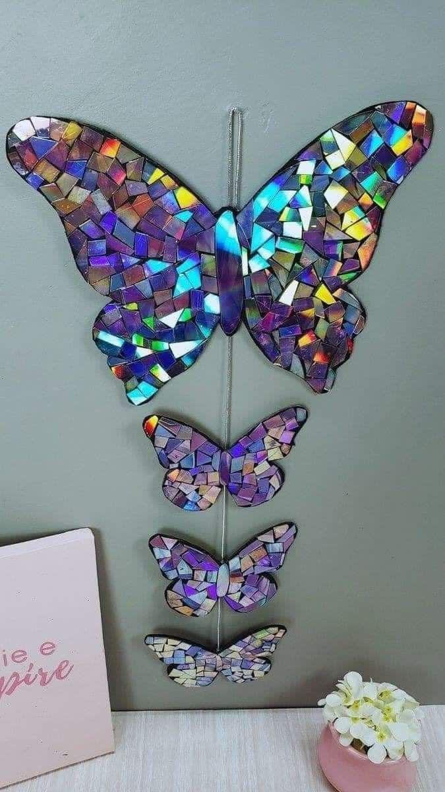
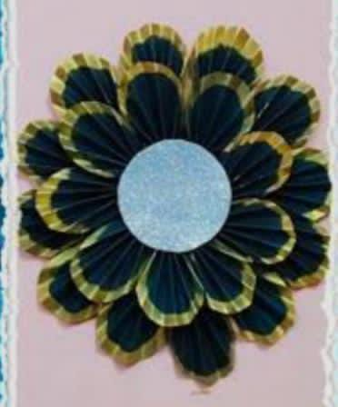

LET'S EXPLORE
Web ini muncul dari keprihatinan terhadap banyaknya limbah rumah tangga yang belum dimanfaatkan secara maksimal. Barang-barang yang dianggap tidak berguna ternyata bisa disulap jadi karya bernilai tinggi.

Mosaic Butterfly
Karya indah dari pecahan CD bekas yang disusun menyerupai kupu-kupu.

Flower Mirror
Cermin bunga dari sendok plastik bekas yang dicat ulang menjadi hiasan estetik.

Yellow Shelf
Rak mini dari kardus bekas, diperkuat dengan cat akrilik dan kertas dekoratif.